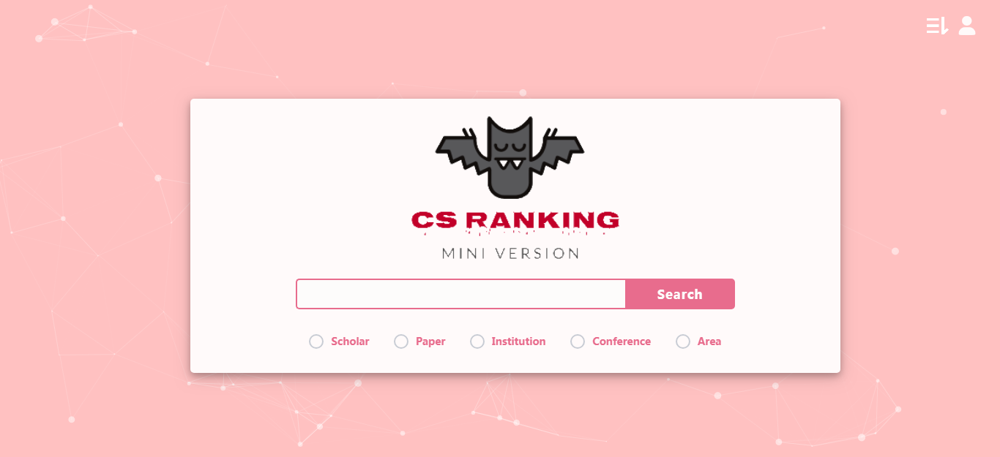
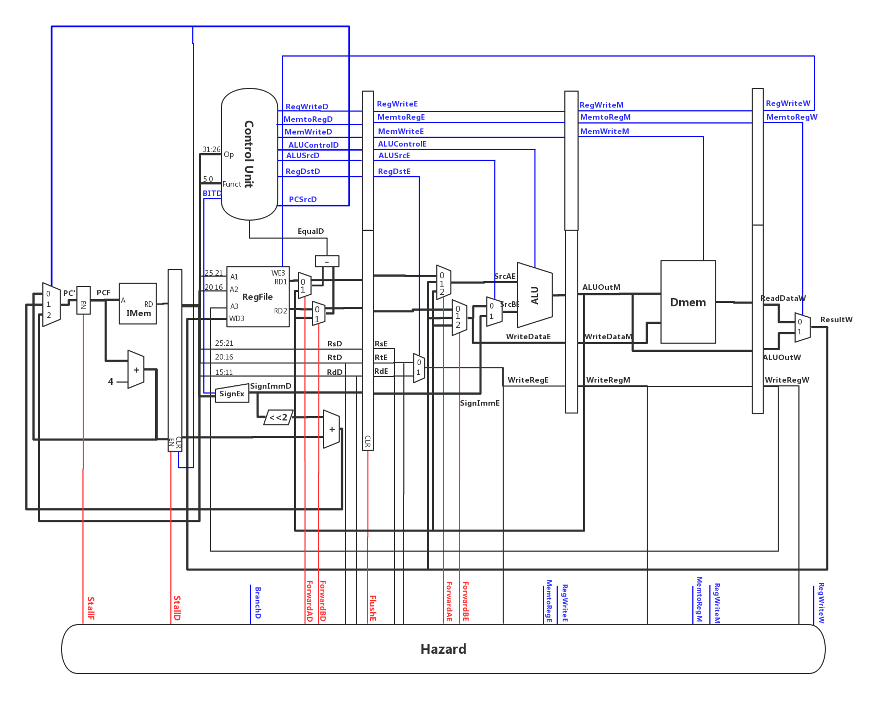

|
Mini-CSRanking: Mini-combination of CSRankings, GoogleScholar and DBLP
Mid-term Project for Intoduction to Database 2019 Spring @ Fudan University, by Xinyi Zhou and Zuobai Zhang |
 |
|
Y86 CPU Assembler and Simulator
Y86 Simulator and Assembly IDE for Introduction to Computer System I 2018 Fall @ Fudan University, by Xinyi Zhou and Zuobai Zhang |
|
MIPS-Microprocessors
CPU Design Project for Introduction to Computer System II 2019 Spring@ Fudan University, by Zuobai Zhang |
 |
|
Geo-fencing
Final Project for Data Structure 2018 Fall @ Fudan University, by Zuobai Zhang |
|
KDD-Cup-2012-Track-1-Solution
Final Project for Data Mining Technology 2019 Spring @ Fudan University, by Zuobai Zhang |